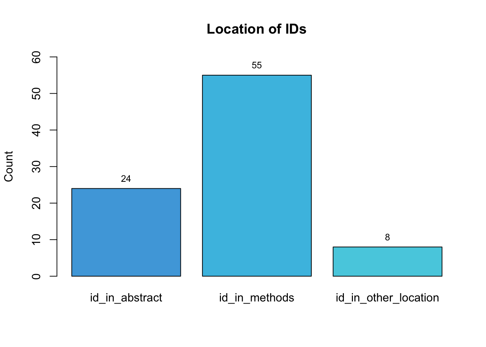
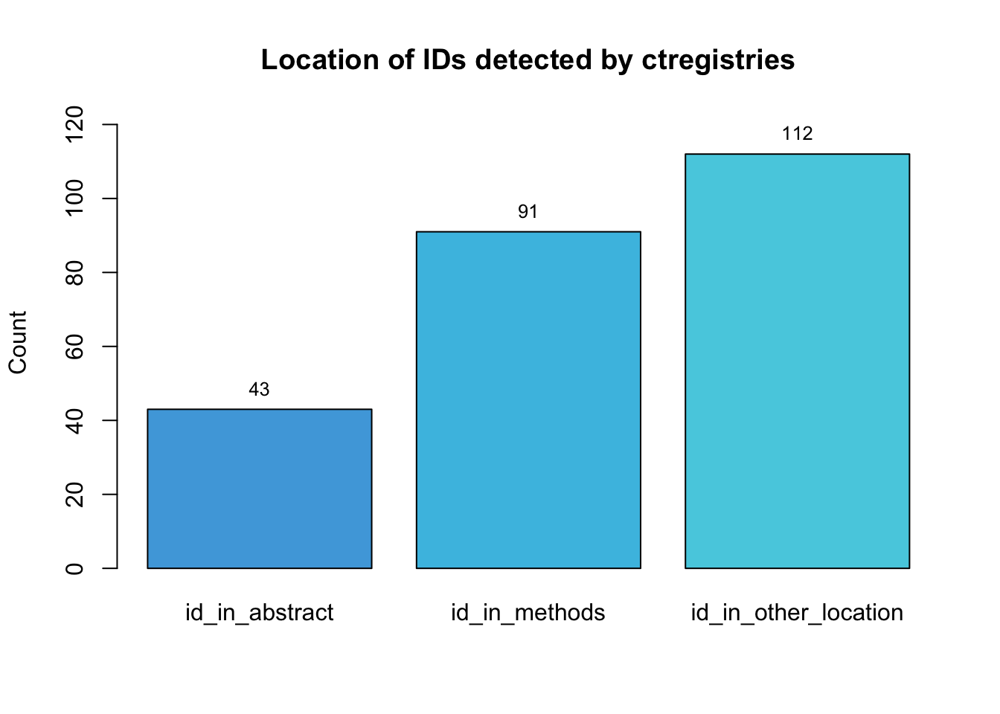
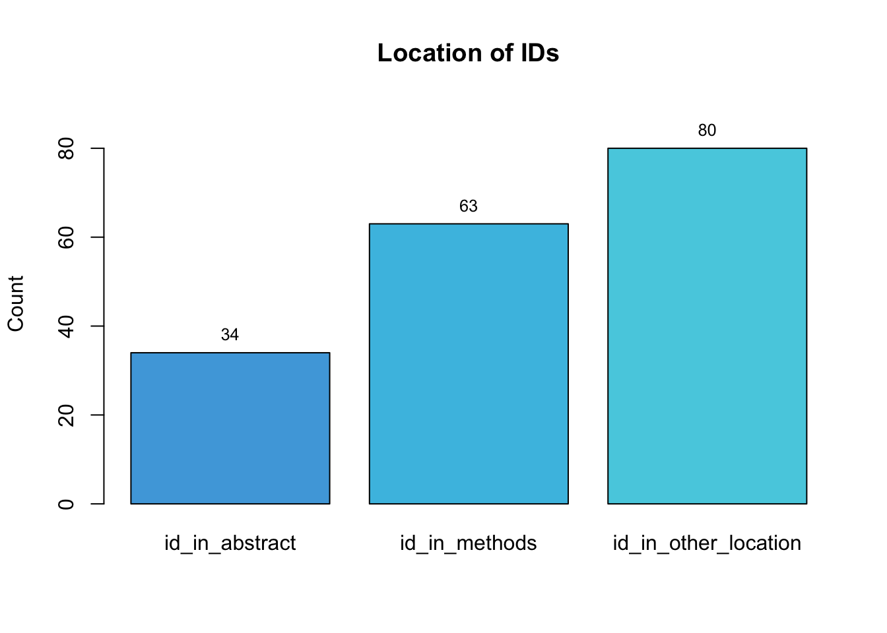

#load dataset
data <- read_csv(here("data/processed", "regset.csv"))
#general overview
data %>%
count(id_type_group) %>%
arrange(desc(n)) %>%
kable()| id_type_group | n |
|---|---|
| trn | 169 |
| false_positive | 29 |
| protocol | 2 |
This document presents the descriptive results from the analysis of 4 different tools (sciscore, trialidentifier, ctregistries and nct). The aim of these tools is to screen papers for one or more registration IDs (protocol, trial registry, etc).
This analysis was limited to papers (n = 117) where a hit was found by one or more tools. Overall, 200 IDs were analyzed. These IDs were grouped in a data file named regset.csv, with the following variables/columns:
Identifier: character. It contains the ID detected. Example: NCT03192410.
PMCID: character. PMC identifier of the paper where the ID was found.
sciscore_hit: boolean. It is TRUE if the tool sciscore detected the identifier. Otherwise FALSE.
trialidentifier_hit: boolean. It is TRUE if the tool trialidentifier detected the identifier. Otherwise FALSE.
ctregistries_hit: boolean. It is TRUE if the tool ctregistries detected the identifier. Otherwise FALSE.
nct_hit: boolean. It is TRUE if the tool nct detected the identifier. Otherwise FALSE.
paper_url: link to the PubMed website where the paper is available.
id_type_group: character. Broad registration category for the detected identifier. For example, if the id is a trial registration identifier number, then the category is trn.
id_type: character. Specific type of identifier found. For example, if the id is grouped as a trn, then the id type consists of the initials of the registry where it comes from, such as ctgov.
id_in_abstract: boolean. It is TRUE if the identifier is present in abstract, otherwise it is FALSE.
id_in_methods: boolean. It is TRUE if the identifier is present in methods, otherwise it is FALSE.
id_in_other_location: boolean. It is TRUE if the identifier is present in another location besides from abstract and methods, otherwise it is FALSE.
other_location: character. If id_in_other_location was TRUE, then the section(s) where the identifier was found in was written in lowercase, and if present in more than one section, it was separated with a comma.
paper_is_research_article: boolean. It is TRUE if the paper is a primary research article with the typical sections of a paper (abstract, introduction, methods, etc.). Otherwise FALSE (e.g., protocol paper, review, etc.)
Types of ID detected
Where were the IDs located (abstract section, methods section, etc.)?
Were the papers research articles?
Did the tools agree/disagree? (i.e. they all found the ID = agree).
Description of each tool - type of ID and location
False positives overview
Additional observations
#load dataset
data <- read_csv(here("data/processed", "regset.csv"))
#general overview
data %>%
count(id_type_group) %>%
arrange(desc(n)) %>%
kable()| id_type_group | n |
|---|---|
| trn | 169 |
| false_positive | 29 |
| protocol | 2 |
The three main groups of ID observed were trial registration numbers (trn), false positives and protocols.
data %>%
filter(id_type_group == "trn") %>%
count(id_type) %>%
arrange(desc(n)) %>%
kable()| id_type | n |
|---|---|
| ctgov | 137 |
| umin | 7 |
| drks | 5 |
| irct | 5 |
| chictr | 3 |
| isrctn | 3 |
| ctri | 2 |
| eudract | 2 |
| actrn | 1 |
| jrct | 1 |
| kct | 1 |
| ntr | 1 |
| pactr | 1 |
The majority of the trial registry numbers were from the ctgov registry, followed by umin, dkrs and irct.
note on the names:
ctgov - US Clinical Trials Register
umin - University Hospital Medical Information Network Register
drks - German Clinical Trials Register
irct - Iranian Registry of Cinical Trials
chictr - Chinese Clinical Trial Registry
isrctn - ISRCTN Registry
ctri - Clinical Trials Registry-India
eudract - EU Clinical Trials Register
actrn - Australian New Zealand Clinical Trial Registry
jrct - Japan Registry of Clinical Trials
kct - Korean Clinical Trial Registry
ntr - Dutch Trial Register
pactr - Pan African Clinical Trials Registry
data %>%
filter(id_type_group == "protocol") %>%
count(id_type_group) %>%
arrange(desc(n)) %>%
kable()| id_type_group | n |
|---|---|
| protocol | 2 |
We only had two IDs that were included in links to specific protocols from protocols.io

data %>%
filter(id_type_group == "false_positive") %>%
count(id_type) %>%
arrange(desc(n)) %>%
kable()| id_type | n |
|---|---|
| funding_id | 13 |
| drug_id | 6 |
| datapoint | 5 |
| catalogue_id | 3 |
| medical_acronym | 1 |
| medical_device | 1 |
The main types of false positives we encounter were IDs corresponding to specific fundings or grants.

What were the other locations? - discussion (53 cases), introduction (23 cases), acknowledgements (16 cases ), results (11 cases), etc.

The IDs analyzed could be in one or more locations of the paper, that is why there are more cases out of a total of 200 IDs. This is important to remember for a following section that analyzes the location of the ID by tool. Some tools searched for the IDs in a particular section of a paper, but if the ID was also present in another section of the same paper, it was also recorded on the datafile.
Here we evaluated if the papers had the structure of a research article (abstract, introduction, methods, results, discussion, etc.).
#Calculating number of papers that were research articles
#Group data by PMCID
data %>%
group_by(PMCID) %>%
summarise(paper_is_research_article = any(paper_is_research_article)) %>%
count(paper_is_research_article) %>%
arrange(desc(paper_is_research_article)) %>%
kable()| paper_is_research_article | n |
|---|---|
| TRUE | 112 |
| FALSE | 5 |
#Calculating number of IDs coming from papers that were research articles.
data %>%
count(paper_is_research_article) %>%
arrange(desc(paper_is_research_article)) %>%
kable()| paper_is_research_article | n |
|---|---|
| TRUE | 159 |
| FALSE | 41 |
Out of 117 papers reviewed, 112 were research articles, and were associated with 159 IDs. The remaining 5 articles in which 41 IDs were found appeared to be either protocol papers, review of findings and an article that did not present a methods section.
It is important to note that 33 out of the 41 IDs came from the same non-research article, which conducted a review and cited studies using their ctgov ID (click here to see article)
data %>%
count(tools_agree) %>%
arrange(desc(tools_agree)) %>%
kable()| tools_agree | n |
|---|---|
| yes | 54 |
| no | 146 |
Overall, the tools agreed in 54 cases, and disagreed in 146. Additionally, they only agreed when the ID was a trn:
data %>%
count(tools_agree, id_type_group) %>%
arrange(desc(tools_agree)) %>%
kable()| tools_agree | id_type_group | n |
|---|---|---|
| yes | trn | 54 |
| no | false_positive | 29 |
| no | protocol | 2 |
| no | trn | 115 |
#subset of sciscore_hit = TRUE
sciscore <- subset(data, data$sciscore_hit %in% c("TRUE"))
sciscore %>%
count(id_type_group, id_type) %>%
kable()| id_type_group | id_type | n |
|---|---|---|
| protocol | protocols_io | 2 |
| trn | ctgov | 54 |
| trn | eudract | 1 |
sciscore detected 55 trial registry number IDs and 2 protocol IDs. The trn were only from ctgov and eudract registries.
The IDs were present in more than 2 locations on the paper: abstract (24 cases), methods (55) and other location (8):

Although the majority of IDs were in both methods and another location, there were 2 cases where the IDs were found in the introduction and not in the methods section: NCT03349060 and NCT03575871.
These two IDs were used as a reference in the same paper (click here to see research article).
#subset of trialidentifier_hit = TRUE
trialidentifier <- subset(data, data$trialidentifier_hit %in% c("TRUE"))
trialidentifier %>%
count(id_type_group, id_type) %>%
kable()| id_type_group | id_type | n |
|---|---|---|
| trn | ctgov | 136 |
| trn | isrctn | 3 |
trialidentifier identified 139 trial registry number IDs, 136 from ctgov and 3 from isrctn.
The IDs were present in more than 2 locations on the paper: abstract (35 cases), methods (65) and other location (80):

#subset of ctregistries_hit = TRUE
ctregistries <- subset(data, data$ctregistries_hit %in% c("TRUE"))
ctregistries %>%
count(id_type_group) %>%
arrange(desc(n)) %>%
kable()| id_type_group | n |
|---|---|
| trn | 166 |
| false_positive | 29 |
ctregistries %>%
filter(id_type_group == "trn") %>%
count(id_type) %>%
arrange(desc(n)) %>%
kable()| id_type | n |
|---|---|
| ctgov | 134 |
| umin | 7 |
| drks | 5 |
| irct | 5 |
| chictr | 3 |
| isrctn | 3 |
| ctri | 2 |
| eudract | 2 |
| actrn | 1 |
| jrct | 1 |
| kct | 1 |
| ntr | 1 |
| pactr | 1 |
Out of the 4 tools, ctregistries was the one who selected the 29 cases of false positives, and the majority (13 cases) were funding ids:
ctregistries %>%
filter(id_type_group == "false_positive") %>%
count(id_type) %>%
arrange(desc(n)) %>%
kable()| id_type | n |
|---|---|
| funding_id | 13 |
| drug_id | 6 |
| datapoint | 5 |
| catalogue_id | 3 |
| medical_acronym | 1 |
| medical_device | 1 |
However, it also detected 166 trial registry number IDs, and the majority (134) were ctgov registry ids:
ctregistries %>%
filter(id_type_group == "trn") %>%
count(id_type) %>%
arrange(desc(n)) %>%
kable()| id_type | n |
|---|---|
| ctgov | 134 |
| umin | 7 |
| drks | 5 |
| irct | 5 |
| chictr | 3 |
| isrctn | 3 |
| ctri | 2 |
| eudract | 2 |
| actrn | 1 |
| jrct | 1 |
| kct | 1 |
| ntr | 1 |
| pactr | 1 |
Finally, the IDs were present in more than 2 locations on the paper: abstract (43 cases), methods (91), other location (112):

#subset of nct_hit = TRUE
nct <- subset(data, data$nct_hit %in% c("TRUE"))
nct %>%
count(id_type_group, id_type) %>%
arrange(desc(n)) %>%
kable()| id_type_group | id_type | n |
|---|---|---|
| trn | ctgov | 137 |
nct identified 137 trial registry number IDs, all from ctgov.
The IDs were present in more than 2 locations on the paper: abstract (34 cases), methods (63), other location (80):

data %>%
filter(id_type_group == "trn") %>%
count(ctregistries_hit, sciscore_hit, trialidentifier_hit, nct_hit) %>%
kable()| ctregistries_hit | sciscore_hit | trialidentifier_hit | nct_hit | n |
|---|---|---|---|---|
| FALSE | FALSE | TRUE | TRUE | 3 |
| TRUE | FALSE | FALSE | FALSE | 28 |
| TRUE | FALSE | FALSE | TRUE | 1 |
| TRUE | FALSE | TRUE | FALSE | 3 |
| TRUE | FALSE | TRUE | TRUE | 79 |
| TRUE | TRUE | FALSE | FALSE | 1 |
| TRUE | TRUE | TRUE | TRUE | 54 |
Based on this table, we can see that:
ctregistries detected 28 trial registration ids that no other tool found, and only missed 3 ids that were detected by both trialidentifier and nct.
sciscore detected 54 ids that all the other tools also found, and it found only one extra id that was also detected by ctregistries. Overall the tool missed 114 trial registration ids.
trialidentifier seem to agree in the majority of cases with nct, but it found 3 additional ids. Overall the tool missed 30 trial registration ids.
nct found only one additional ids compared to trial identifier. Overall the tool missed 32 trial registration ids.
As reported before, the 29 false positives were detected by ctregistries. The locations of these false positive were in the methods section (5 cases) and other location (24 cases):

Out of the 24 false positives that were found in another location, 13 were found in the acknowledgments section and consisted only of funding IDs, 10 were found in the results section, from which 6 were drug ids and 4 were datapoints. Finally, one false positive was found in the introduction section, and it consisted of a medical acronym.
false_positive %>%
filter(!is.na(other_location)) %>%
group_by(id_type) %>%
count(other_location) %>%
arrange(desc(n)) %>%
kable()| id_type | other_location | n |
|---|---|---|
| funding_id | acknowledgements | 13 |
| drug_id | results | 6 |
| datapoint | results | 4 |
| medical_acronym | introduction | 1 |
Some papers analyzed use specifically the ctgov trial registry number as a way to cite other studies in their introduction or discussion. In this analysis, 71 of 137 ctgov trn’s were used as reference.
Sometimes they were detected as IDs, but not in all cases. For example, funding IDs detected by the tools were 12 digits long:

Funding IDs that were present in the negative control check, and therefore not detected by the tools, were slightly shorter (for example: 92035302) or longer (for example: 2016YFD0100800).
There were two cases of ctgov IDs reported with a missing digit, but the tools trialidentifier and nct were still able to identify them.

An additional analysis was conducted on 50 research articles where a hit was not found by any of the tools. These papers were grouped in a dataset called nc_man_check, which contained the following variables/columns:
PMCID: character. PMC identifier of the paper where no registration ID was found.
paper_url: link to the PubMed website where the paper is available.
reg_id_in_paper: nominal. TRUE if paper contains one or more registration ids, FALSE if it does not contain any registration id, and Unsure if it contains an suspected registration id.
reg_id: character. If reg_id_in_paper is TRUE or Unsure, this column registers the id or suspected id.
comments: character. Brief observation on the flagged id.
Overall, out of the 50 papers reviewed, there were only three papers flagged for a possible registration number:
Number ID found for the Institutional Animal Care and Use Committee (IACUC): 2014092403. This could be a protocol ID.
Number ID from www.researchregistry.com: researchregistry7399
Number ID for Prospero Registry: CRD42021225699
There were also Ethical ID numbers present in 7 cases. These types of ID were not detected by the tools, but one could question if those are considered as a form of registration or not.
Finally, as mentioned before, there were 6 cases of funding IDs that were present on some of these papers. The IDs were different as the ones that were being detected in the main analysis as funding_ids.